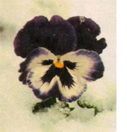
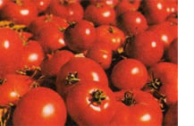
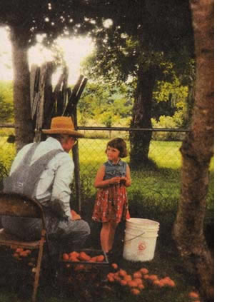
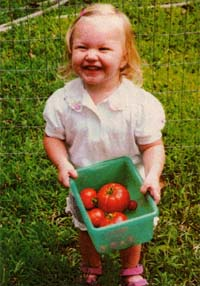
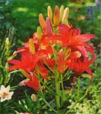
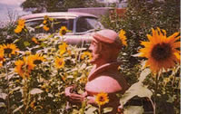
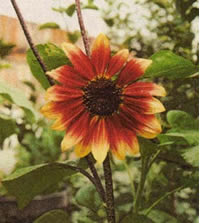

MOTHER'S PHOTO CLUB
More snapshots from Mother Country
Algernon Charles Swinburne wrote a poem in 1865 entitled Atalanta in Calydon, which includes one of our favorite tributes to the season of rebirth:
When the hounds of spring are on winter's traces,
The mother of months in meadow or plain
Fills the shadows and windy places,
With lisp of leaves and ripple of rain,
For winter's rains and ruins are over,
And all the season of snows and sins,
The days dividing lover and lover,
The light that loses, the night that wins;
And time remembered is grief forgotten,
And frosts are slain and flowers begotten,
And in green underwood and cover,
Blossom by blossom the spring begins.
"Emmy with 7-inch purple teepee bean," by R. Ogle of Silver, Virginia.
Patricia Fain Hutson of Newport, Virginia, shows us that spring conquers all.
"Tomatoes" by Leila Koeppel of Lake Mills, Wisconsin.
In the company of such great photographs, it's not really fair to pick favorites, but the minute we saw this one, faces lit up all over the place. LaDonna Powell of Elkins, Arkansas, writes: "Enclosed is a photo of my stepdaughter. She is with her step great-grandad. He is sorting potatoes according to their sizes and Natalie just couldn't seem to understand why anyone would do that."
Jodi Higgins of Fort Collins, Colorado snapped 18-month-old fledgling gardener Bridget Higgins inaction. "We've just moved to Colorado, " she writes, `and we're slowly learning and experimenting with our new climate. "Bridget seems right at home.
A burst of color from Nancy J. Rapalee of Dundee, New York.
Tina Beeler of Lutterll, Tennessee, took this photo of her daughter; Britney. Two roses, side by side.
Madonna Dunbar of Kings Beach, California writes:
"I live full-time in a bus-conversion (a classic 4515 GMC coach) and so most of my gardening is limited to container plants and bonsai trees. Last year, however, I had the opportunity to garden a small plot in New Mexico ...and boy did I enjoy it! The photo shows my birdseed site; migrating songbirds on their way south had picked it dean by October."
We received this gem from Paul Lamb just before we went to press with this issue. Who could resist?
Americans bought more than 1.2 billion fresh-cut roses last year. That's nearly a dozen for every woman in the nation. We get nearly 60% of our fresh-cut flowers from California.
We hope that these images of spring help you shake off the cold a bit faster. If you haven't clicked your camera for us yet, send those works of art to:MOTHER'Photo Club, atm.: Jamey O'Quinn, Mother Earth News, P. O. Box 129, Arden, NC 28704. If we print your photo, we'll send you $50, plus a sixtimes-yearly newsletter featuring hints from our photo department and news from the club.
|
|
 |
 |
|
 |
 |
 |
|
|
 |
 |